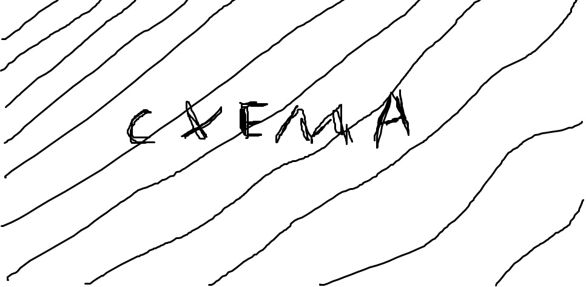

Измерение коэффициента
трения скольжения
Цель работы: исследовать зависимость силы трения скольжения от силы нормального давления; проверить достоверность оценки коэффициента трения, убедившись в том, что резултаты измерения совпадают; разобрать способ измерения коэффициента трения моенты по исследуемой поверхности.
Оборудование: деревянный брусок, набор грузов, динамометр, деревянная линейка, измерительная лента.
Теоретическое обоснование
1.Схема первого способа измерения коэффициента трения скольжения приведена ниже
Деревянный брусок, на котором сверху помещаются грузы, присоеденен к динамометру.
При приложении к динамометру внешней силы брусок может перемещатся по горизонтально расположенной деревянной линейке. При равномерном движении бруска его ускорение равно нулю. Согласно второму закону Ньютона геометрическая сумма сил, действующих на брусок в этом случае, также равно нулю. Это озночает что сила трения скольжения уравновешивает силу растяжения пружины динамометра и может быть измерена динамометром.
Коэффициент трения скольжения определяется как коэффициент пропорциональности между силой трения Fтр и силой нормального давления F⟂ бруска с грузами на опору (или весом тела):
Fтр = µF⟂ (1)
Сила нормального давления F⟂ в данном случае равна весу бруска вместе с грузом и определяется взвешиванием. Тогда по результатам измерений Fтр и F⟂ можно вычислить коэффициент трения скольжения:
µ = Fтр/F⟂ (2)
Согласно формуле (1) графиком зависимости Fтр и F⟂ является прямая линия (рис. 349). Как видно из графика, µ = tg α (где α - угол наклона прямой к оси абсцисс, если масштаб сил, откладываемых по осям координат одинаков).
2. Второй способ измерения коэффициента трения скольжения не требует непосредственного измерения сил и соответственно использования динамометра. В этом случае один из концов линейки с помещенным на ней бруском и грузом постепенно приподнимают до тех пор, пока при небольшом толчке брусок не начнет равномерно скользить вниз по линейке (рис.350). В этот момент линейка образует угол α с горизонталью, а сумма проекций сил на оси X и Y, действующих на тело, будет равна нулю:
(X) mgsin α - Fтр = 0
(Y) mgcos α - N = 0 (3)
Учитывая, что Fтр = µF⟂, а F⟂ = N по третьему закону Ньютона, можно представить систему уравнений (3) в виде
Беря отношение правых и левых частей системы (4), получаем:
µ = tg α (5)
Как видно из рисунка (СХЕМА) 350,
tg α = h/a ,
Следовательно,
Ход работы
1.С помощью динамометра определите вес деревянного бруска P0, бруска вместе с одним грузом ( P0 + P), бруска с двумя грузами (P0 + 2P), бруска с тремя грузами (P0 + 3P). Результаты занесите в таблицу ниже (в графу F⟂).
| P0, Н | P0 + P, Н | P0 + 2P, Н | P0 + 3P, Н | |
| F⟂, Н | ||||
| Fтр, Н |
2.Динамометром равномерно тяните брусок по линейке, измеряя силу тяги Fт (Fт = Fтр). Опыт повторите, нагрузим брусок одним, потом двумя и тремя грузами резултаты измерений Fтр запишите в ту же таблицу.
3.Постройте график зависимости Fтр (F⟂), используя даные таблиц. Через начало отсчета проведите прямую линию так, чтобы число точек над прямой ровнялось числу точек под прямой.
4.Найдите коэффициент трения скольжения µ по формуле (5) как тангенс угла наклона прямой линии к оси абсцисс.
Для этого выберите произвольную точку с координатами (F⟂, Fтр) на прямой и найдите µ как отношение
µ = Fтр/F⟂
Произвольная точка: ( , )
µ =